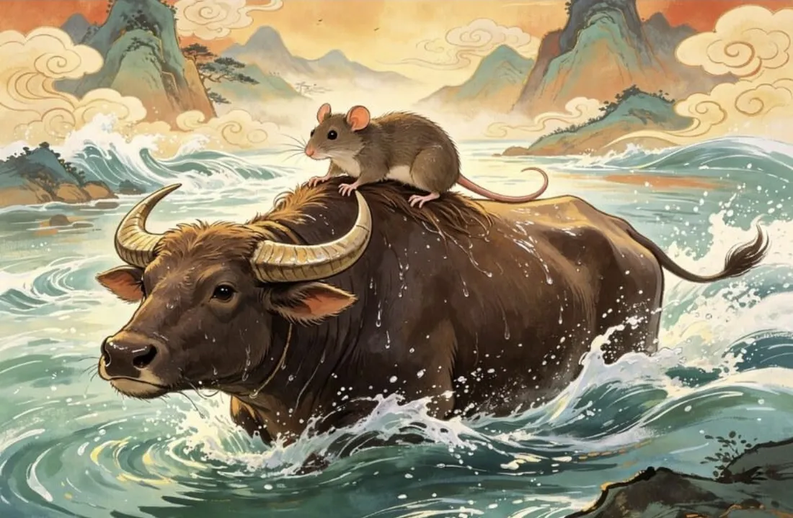

Zodiac Stories & Legends
Why the Rat Came First in the Chinese Zodiac
The smallest animal in the zodiac stands at the front of the line. How did a rat beat the tiger, the horse and even the dragon?

A small animal with a big plan
In the folk tale of the Great Race, the Jade Emperor named the years after the animals in the order they crossed a river to reach him. The Rat had a problem: it could not swim well, and it was far smaller than its rivals. Instead of trying to win by strength, it looked for a way to win by thinking.
The ride on the Ox
The Rat noticed that the Ox was a strong, steady swimmer and a generous animal. In the most familiar telling, the Rat and the Cat asked the Ox to carry them, and the Ox agreed. As the Ox neared the far bank, the Rat pushed the Cat into the water, jumped from the Ox's head and landed in front of the Emperor. The Rat was named first; the Ox, who had done the hard work, was second.
Other tellers soften the story. In one version, the Rat offers to sing to the Ox to keep its spirits up during the long swim, then hops off at the end. The result is the same: the clever Rat finishes first.
The Rat and the Cat
Many versions explain the rivalry between rats and cats with this race. Sometimes the Rat pushes the Cat into the water; sometimes it promises to wake the Cat on race day and lets it oversleep. Either way, the Cat misses its chance and never gets a year of its own, which, storytellers say, is why cats still chase rats. Like the rest of the Great Race, this is a playful explanation, not history.
Other traditional reasons the Rat begins the cycle
Outside the legend, the Rat's first place follows the order of the twelve Earthly Branches, the ancient counting system the animals were paired with. The first branch, zi, is matched with the Rat, and it also marks the first two-hour period of the day, from 23:00 to 01:00, when one day turns into the next. The Rat therefore stands for beginnings: the start of the cycle and the start of the day.
There is also a folk belief that rats have a different number of toes on their front and back feet, which gave the Rat a link to "turning over" and new starts. Treat this as traditional lore rather than a rule of the calendar.
What the Rat's victory says about the Rat sign
The story shapes how people describe those born in the Year of the Rat. Our Year of the Rat guide describes the sign as quick-witted, resourceful and sociable: natural problem-solvers who notice opportunities others miss. The race is the perfect picture of that: the Rat saw the Ox as a solution, not an obstacle.
The tale also carries a warning. Winning by pushing a friend into the river is not admirable, and many tellers let listeners ask whether the Rat really deserved first place. In traditional readings the Rat's weak side is restlessness and caution about trust, a reminder that cleverness works best alongside fairness.
The Rat in Cambodia
In the Khmer cycle the Rat is called Choot, and its year begins at Khmer New Year in April. The same story of the clever Rat and the patient Ox is told across the region, usually with the same lesson about brains and generosity. See Khmer animal years for the dates.
Born in the Year of the Rat? Check your zodiac animal and element, then read the full Rat guide.
Frequently asked questions
Why is the Rat first in the Chinese zodiac?
In the Great Race folk tale, the Rat rode across the river on the Ox and jumped off to finish first. Historically, the Rat is paired with zi, the first of the twelve Earthly Branches.
Did the Rat cheat?
In many versions it tricked the Cat and used the Ox's help, so tellers often ask whether its win was fair. It is a story about cleverness and its limits.
What hours belong to the Rat?
The Rat's branch, zi, covers 23:00 to 01:00, the turn from one day to the next.
Sources and further reading
- Wikipedia: Chinese zodiac — the Great Race folk tale and its variants, and the link between the animals and the Earthly Branches.
- Wikipedia: Earthly Branches — the twelve branches, their two-hour periods and the theory linking them to Jupiter, the Year Star.
- The Royal Mint: The Story of the Animals Behind the Chinese Zodiac: the Rat and the Cat — a retelling of the Rat and Cat tale.
- USC Folklore Archives: The Zodiac Rat and Cats — a collected oral version of the Rat and Cat story.
The Great Race and the other tales here are folk tales, told in many versions; they are not historical events. Personality traits are traditional zodiac beliefs, shared for culture and entertainment.
Explore more: The Great Zodiac Race · Year of the Rat guide · Year of the Ox guide · Why Are There 12 Animals? · All Zodiac Stories & Legends
← Back to Zodiac Stories & Legendsរឿងនិទាន និងរឿងព្រេងរាសីចិន
ហេតុអ្វីជូតមកមុនគេក្នុងរាសីចិន
សត្វតូចជាងគេបំផុតក្នុងរាសីចិន បែរជាឈរនៅមុខគេក្នុងជួរ។ តើកណ្ដុរ (ជូត) អាចឈ្នះខ្លា (ខាល) សេះ (មមី) និងសូម្បីតែនាគ (រោង) ដោយរបៀបណា?
សត្វតូច តែមានផែនការធំ
ក្នុងរឿងនិទានប្រជាប្រិយអំពីការប្រណាំងដ៏ធំ ស្ដេចស្ថានសួគ៌ (Jade Emperor) បានដាក់ឈ្មោះឆ្នាំនានាតាមសត្វ ទៅតាមលំដាប់ដែលសត្វទាំងនោះ ឆ្លងទន្លេមកដល់ចំពោះព្រះភ័ក្ត្រទ្រង់។ កណ្ដុរមានបញ្ហាមួយ៖ វាហែលទឹកមិនសូវពូកែ ហើយវាតូចជាងគូប្រជែងរបស់វាឆ្ងាយណាស់។ ជំនួសឲ្យការព្យាយាមឈ្នះដោយកម្លាំង វាបានរកវិធីឈ្នះដោយប្រើគំនិត។
ជិះលើខ្នងគោ
កណ្ដុរសង្កេតឃើញថា គោ (ឆ្លូវ) ជាសត្វហែលទឹកខ្លាំង និងនឹងនរ ហើយជាសត្វមានចិត្តសប្បុរស។ ក្នុងការនិទានដែលគេស្គាល់ច្រើនជាងគេ កណ្ដុរ និងឆ្មាបានសុំឲ្យគោដឹកវាទាំងពីរ ហើយគោក៏យល់ព្រម។ ពេលគោហែលជិតដល់ច្រាំងម្ខាងទៀត កណ្ដុររុញឆ្មាធ្លាក់ទឹក លោតពីក្បាលគោ ទៅចុះនៅចំពោះព្រះភ័ក្ត្រស្ដេចស្ថានសួគ៌។ កណ្ដុរត្រូវបានប្រកាសឲ្យនៅលំដាប់ទីមួយ ចំណែកគោ ដែលជាអ្នកធ្វើការលំបាក បានលំដាប់ទីពីរ។
អ្នកនិទានខ្លះទៀត និទានរឿងនេះបែបស្រទន់ជាងនេះ។ ក្នុងការនិទានមួយបែប កណ្ដុរស្ម័គ្រច្រៀងឲ្យគោស្ដាប់ ដើម្បីលើកទឹកចិត្តគោ ក្នុងពេលហែលទឹកដ៏យូរ រួចលោតចុះនៅទីបញ្ចប់។ លទ្ធផលនៅតែដដែល៖ កណ្ដុរដ៏ឆ្លាតវៃ មកដល់មុនគេ។
កណ្ដុរ និងឆ្មា
ការនិទានជាច្រើន ប្រើការប្រណាំងនេះ ដើម្បីពន្យល់ពីការជាសត្រូវនឹងគ្នា រវាងកណ្ដុរ និងឆ្មា។ ពេលខ្លះ កណ្ដុររុញឆ្មាធ្លាក់ទឹក ពេលខ្លះទៀត វាសន្យាថានឹងដាស់ឆ្មានៅថ្ងៃប្រណាំង ប៉ុន្តែបែរជាទុកឲ្យឆ្មាដេកលក់ហួសពេល។ មិនថាបែបណាក៏ដោយ ឆ្មាខកខានឱកាស ហើយមិនដែលបានឆ្នាំផ្ទាល់ខ្លួនឡើយ ហើយតាមសម្ដីអ្នកនិទាន នេះហើយជាមូលហេតុដែលឆ្មានៅតែដេញចាប់កណ្ដុរសព្វថ្ងៃ។ ដូចផ្នែកផ្សេងទៀតនៃរឿងការប្រណាំងដ៏ធំដែរ នេះជាការពន្យល់បែបកំប្លែងលេងសើច មិនមែនជាប្រវត្តិសាស្ត្រទេ។
ហេតុផលតាមប្រពៃណីផ្សេងទៀត ដែលជូតនៅដើមវដ្ត
ក្រៅពីរឿងព្រេង លំដាប់ទីមួយរបស់ជូត គឺដើរតាមលំដាប់នៃមែកផែនដីទាំងដប់ពីរ ដែលជាប្រព័ន្ធរាប់បុរាណ ដែលសត្វទាំងនេះត្រូវបានផ្គូផ្គងជាមួយ។ មែកទីមួយ គឺ zi ត្រូវនឹងជូត ហើយក៏សម្គាល់រយៈពេលពីរម៉ោងដំបូងនៃថ្ងៃ ចាប់ពីម៉ោង 23:00 ដល់ 01:00 ដែលជាពេលថ្ងៃមួយប្ដូរទៅថ្ងៃបន្ទាប់។ ហេតុនេះ ជូតតំណាងឲ្យការចាប់ផ្ដើម៖ ការចាប់ផ្ដើមនៃវដ្ត និងការចាប់ផ្ដើមនៃថ្ងៃ។
ក៏មានជំនឿប្រជាប្រិយមួយដែរថា កណ្ដុរមានចំនួនម្រាមជើងខុសគ្នា រវាងជើងមុខ និងជើងក្រោយ ដែលធ្វើឲ្យជូតមានទំនាក់ទំនងនឹង «ការប្ដូរវេន» និងការចាប់ផ្ដើមថ្មី។ សូមចាត់ទុករឿងនេះ ជារឿងតំណាលតាមប្រពៃណី ជាជាងជាច្បាប់នៃប្រតិទិន។
ជ័យជម្នះរបស់កណ្ដុរ ប្រាប់អ្វីខ្លះអំពីរាសីជូត
រឿងនេះ មានឥទ្ធិពលលើរបៀបដែលមនុស្សពិពណ៌នាអំពីអ្នកកើតឆ្នាំជូត។ មគ្គុទ្ទេសក៍ឆ្នាំជូតរបស់យើង ពិពណ៌នារាសីនេះថា មានគំនិតរហ័ស ប៉ិនប្រសប់ និងចូលចិត្តសេពគប់៖ ជាអ្នកដោះស្រាយបញ្ហាដោយធម្មជាតិ ដែលចេះមើលឃើញឱកាសដែលអ្នកដទៃមើលរំលង។ ការប្រណាំងនេះ ជារូបភាពដ៏ល្អឥតខ្ចោះនៃចរិតនោះ៖ កណ្ដុរមើលឃើញគោជាដំណោះស្រាយ មិនមែនជាឧបសគ្គទេ។
រឿងនេះក៏មានការព្រមានមួយដែរ។ ការឈ្នះដោយរុញមិត្តភក្ដិធ្លាក់ទន្លេ មិនមែនជារឿងគួរកោតសរសើរទេ ហើយអ្នកនិទានជាច្រើន ទុកឲ្យអ្នកស្ដាប់សួរខ្លួនឯងថា តើកណ្ដុរពិតជាសមនឹងទទួលបានលំដាប់ទីមួយឬទេ។ តាមការបកស្រាយតាមប្រពៃណី ចំណុចខ្សោយរបស់ជូត គឺភាពមិនស្ងប់ និងការប្រុងប្រយ័ត្នក្នុងការទុកចិត្តអ្នកដទៃ ដែលជាការរំលឹកថា ភាពឆ្លាតវៃ មានប្រសិទ្ធភាពបំផុត នៅពេលដើរទន្ទឹមនឹងភាពយុត្តិធម៌។
ជូតនៅកម្ពុជា
ក្នុងវដ្តឆ្នាំខ្មែរ សត្វកណ្ដុរហៅថា ជូត ហើយឆ្នាំជូតចាប់ផ្ដើមនៅបុណ្យចូលឆ្នាំខ្មែរ ក្នុងខែមេសា។ រឿងដដែលនេះ អំពីកណ្ដុរដ៏ឆ្លាតវៃ និងគោដ៏អត់ធ្មត់ ត្រូវបានគេនិទាននៅទូទាំងតំបន់ ហើយជាធម្មតាមានមេរៀនដូចគ្នា អំពីប្រាជ្ញា និងចិត្តសប្បុរស។ សូមមើល ឆ្នាំសត្វខ្មែរ សម្រាប់កាលបរិច្ឆេទ។
កើតឆ្នាំជូតមែនទេ? ពិនិត្យសត្វរាសី និងធាតុរបស់អ្នក រួចអានមគ្គុទ្ទេសក៍ឆ្នាំជូតពេញលេញ។
សំណួរដែលគេសួរញឹកញាប់
ហេតុអ្វីជូតនៅលំដាប់ទីមួយក្នុងរាសីចិន?
ក្នុងរឿងនិទានប្រជាប្រិយអំពីការប្រណាំងដ៏ធំ កណ្ដុរជិះគោឆ្លងទន្លេ ហើយលោតចុះ ដើម្បីទៅដល់មុនគេ។ តាមប្រវត្តិសាស្ត្រ ជូតត្រូវបានផ្គូផ្គងជាមួយ zi ដែលជាមែកទីមួយ ក្នុងចំណោមមែកផែនដីទាំងដប់ពីរ។
តើកណ្ដុរបានលួចបន្លំឬទេ?
ក្នុងការនិទានជាច្រើន វាបោកបញ្ឆោតឆ្មា ហើយប្រើជំនួយពីគោ ដូច្នេះអ្នកនិទានច្រើនតែសួរថា តើជ័យជម្នះរបស់វាយុត្តិធម៌ឬទេ។ នេះជារឿងអំពីភាពឆ្លាតវៃ និងដែនកំណត់របស់វា។
ម៉ោងណាខ្លះជាម៉ោងរបស់ជូត?
មែករបស់ជូត គឺ zi គ្របដណ្ដប់ពីម៉ោង 23:00 ដល់ 01:00 ដែលជាពេលប្ដូរពីថ្ងៃមួយទៅថ្ងៃបន្ទាប់។
ប្រភព និងឯកសារអានបន្ថែម
- Wikipedia: Chinese zodiac — រឿងនិទានប្រជាប្រិយអំពីការប្រណាំងដ៏ធំ និងការនិទានបែបផ្សេងៗ ព្រមទាំងទំនាក់ទំនងរវាងសត្វទាំងនេះ និងមែកផែនដី។
- Wikipedia: Earthly Branches — មែកទាំងដប់ពីរ រយៈពេលពីរម៉ោងរបស់មែកនីមួយៗ និងទ្រឹស្ដីដែលភ្ជាប់មែកទាំងនេះ ទៅនឹងភពព្រហស្បតិ៍ ដែលហៅថា ផ្កាយឆ្នាំ (Year Star)។
- The Royal Mint: The Story of the Animals Behind the Chinese Zodiac: the Rat and the Cat — ការនិទានឡើងវិញ នូវរឿងកណ្ដុរ និងឆ្មា។
- USC Folklore Archives: The Zodiac Rat and Cats — រឿងកណ្ដុរ និងឆ្មាមួយបែប ដែលគេនិទានតាមមាត់ ហើយត្រូវបានប្រមូលកត់ត្រាទុក។
ការប្រណាំងដ៏ធំ (Great Race) និងរឿងផ្សេងៗទៀតនៅទីនេះ ជារឿងនិទានប្រជាប្រិយ ដែលគេនិទានតៗគ្នាច្រើនបែបខុសៗគ្នា មិនមែនជាព្រឹត្តិការណ៍ប្រវត្តិសាស្ត្រទេ។ បុគ្គលិកលក្ខណៈរបស់សត្វរាសីនីមួយៗ ជាជំនឿតាមប្រពៃណី ដែលយើងចែករំលែកសម្រាប់ការស្វែងយល់វប្បធម៌ និងការកម្សាន្ត។
អានបន្ថែម៖ ការប្រណាំងដ៏ធំនៃរាសីចិន · មគ្គុទ្ទេសក៍ឆ្នាំជូត · មគ្គុទ្ទេសក៍ឆ្នាំឆ្លូវ · ហេតុអ្វីបានជាមានសត្វ 12? · រឿងនិទាន និងរឿងព្រេងរាសីចិនទាំងអស់
← ត្រឡប់ទៅរឿងនិទាន និងរឿងព្រេងរាសីចិន